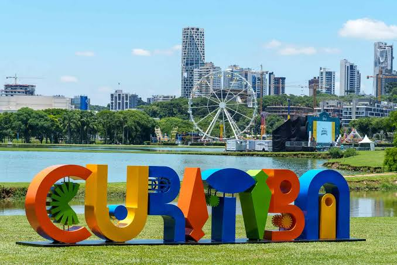

Conheça a nossa história e quem está por trás do site.
O Curiti-go é um site de turismo dedicado a Curitiba, criado por estudantes como projeto de faculdade. Nosso objetivo é mostrar o melhor da capital paranaense para quem quer conhecer a cidade, seja morador ou visitante.
Aqui você descobre os principais pontos turísticos de Curitiba, assiste a vídeos que mostram a cidade de perto e se inspira com uma galeria de fotos dos lugares mais bonitos. Tudo reunido em um só lugar, para você planejar o seu passeio com facilidade.

Desenvolvedor Web
Desenvolvedor Web